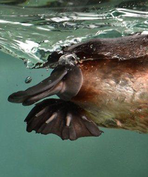
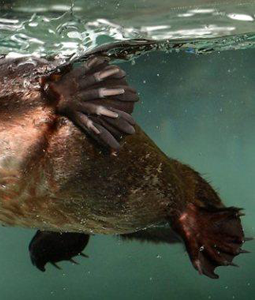

The platypus (Ornithorhynchus anatinus), sometimes referred to as the duck-billed platypus, is a semiaquatic egg-laying mammal endemic to eastern Australia, including Tasmania. Together with the four species of echidna, it is one of the five extant species of monotremes,   the only mammals that lay eggs instead of giving birth. The animal is the sole living representative of its family (Ornithorhynchidae) and genus (Ornithorhynchus), though a number of related species have been found in the fossil record. The first preserved platypus body was thought to have been a fake, made of several animals sewn together, when it was first looked at by scientists in 1799. The unusual appearance of this egg-laying, duck-billed, beaver-tailed, o tter-footed mammal baffled European naturalists when they first encountered it, with some considering it an elaborate hoax. It is one of the few species of venomous mammals: the male platypus having a spur on the hind foot that delivers a venom capable of causing severe pain to humans. The unique features of the platypus make it an important subject in the study of evolutionary biology and a recognisable and iconic symbol of Australia; it has appeared as a mascot at national events and is featured on the reverse of its 20-cent coin. The platypus is the animal emblem of the state of New South Wales.[5]